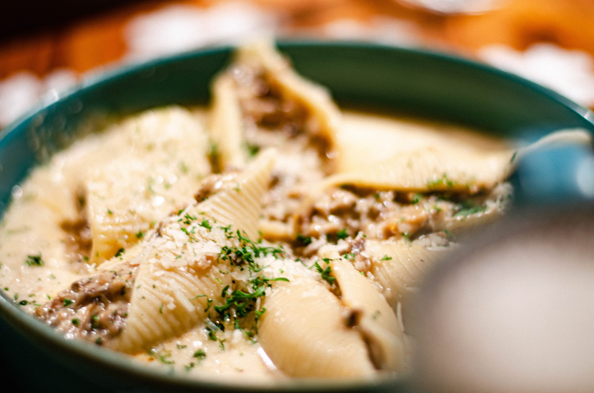

맛집이란, 국어사전에는 등재되어 있지 않지만, 맛있는 음식을 파는 집이라는 뜻의 순우리말 신조어.
네이버 뉴스 라이브러리에 검색해 보면 1987년에도 사용되었던 단어이다. '맛있는 집(가게)'의 축약으로 보인다.
현재는 남발되어 사실상 음식점의 다른 표현 수준이다.
미식가를 자처하는 사람들의 필수 성지순례 코스이자 식도락 모임을 주최하는 사람이 골을 싸매고 찾으려 하는 장소이며,
장사가 잘되는 집이 되기에 모든 음식점의 사장님들이 되고 싶어하는 장소이다. 이상하게 대한민국에서는 산골짜기나 골목 깊숙 깊숙 숨어있거나 크기가 작아 초라해
보이는 음식집이 맛집인 경우가 많다. 위치가 좋지 않은 집에서는 맛이 뛰어나지 않으면 사람들이 오질 않으니 당연하다.
누가 찾아가기도 힘든 곳에서 평범한 맛의 음식을 먹고 싶겠는가. 대신 오래된 집들은 예외. 보통 이런 집들은 평범한 맛일지라도 몇십 년된 단골들이 꾸준히 찾아온다.